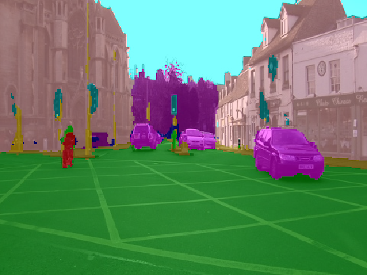

Image Segmenation Keras is a Keras/Tensorflow based image segmentation framework. Custom docker images with additional tools are available from here:
https://github.com/waikato-datamining/tensorflow/tree/master/image-segmentation-keras
Prerequisites#
Make sure you have the directory structure created as outlined in the Prerequisites.
Data#
In this example, we will use the CamVid-12 dataset, which consists of still images from dashcam videos from a city environment (12 different labels).
Download the dataset from the following URL into the data directory and extract it:
https://datasets.cms.waikato.ac.nz/ufdl/data/camvid12/camvid12-grayscale.zip
Once extracted, rename the grayscale directory to camvid-grayscale.
Now we have to convert the format from grayscale into blue channel, which the framework uses. We can do this by using the wai.annotations library. At the same time, we can split the dataset into train, validation and test subsets.
From within the applied_deep_learning directory, run the following command:
docker run -u $(id -u):$(id -g) \
-v `pwd`:/workspace \
-t waikatoufdl/wai.annotations:latest \
wai-annotations convert \
from-grayscale-is \
-i "/workspace/data/camvid-grayscale/*.png" \
--labels sky building pole road pavement tree signsymbol fence car pedestrian bicyclist unlabelled \
to-blue-channel-is \
-o /workspace/data/camvid-bluechannel-split \
--split-names train val test \
--split-ratios 70 15 15
Training#
For training, we will use the following docker image:
waikatodatamining/image-segmentation-keras:1.14.0_0.3.0
The training script is called keras_seg_train, for which we can invoke the help screen as follows:
docker run -t waikatodatamining/image-segmentation-keras:1.14.0_0.3.0 keras_seg_train --help
It is good practice creating a separate sub-directory for each training run, with a directory name that hints at
what dataset and model were used. So for our first training run, which will use mainly default parameters, we will
create the following directory in the output folder:
camvid12-keras-unet50
Image Segmentation Keras does not use a config file, but can be configured via command-line parameters instead:
- the number of classes (
--n_classes) is actual classes plus background - the width/height of the inputs must be multiples of 32 (
--input_height,--input_width) - the output directory is specified via
--checkpoints_path(make sure to have a trailing slash!) - in our case, the images and the annotations reside in the same directories, so
--train_imagesand--train_annotationspoint to the same directory (analog for--val_imagesand--val_annotations) - with
--epochsyou can specify for how long the model will get trained --model_namespecifies the architecture and backend (see here for available options)
Kick off the training of a U-Net with a ResNet50 backend using the following command:
docker run \
-u $(id -u):$(id -g) \
--gpus=all \
-v `pwd`:/workspace \
-v `pwd`/cache:/tmp/.keras \
-t waikatodatamining/image-segmentation-keras:1.14.0_0.3.0 \
keras_seg_train \
--checkpoints_path /workspace/output/camvid12-keras-unet50/ \
--train_images /workspace/data/camvid-bluechannel-split/train \
--train_annotations /workspace/data/camvid-bluechannel-split/train \
--val_images /workspace/data/camvid-bluechannel-split/val \
--val_annotations /workspace/data/camvid-bluechannel-split/val \
--epochs 10 \
--n_classes 13 \
--input_height 384 \
--input_width 480 \
--model_name resnet50_unet
Predicting#
Using the keras_seg_poll script, we can batch-process images placed in the predictions/in directory
as follows (e.g., from our test subset):
docker run \
-u $(id -u):$(id -g) \
--gpus=all \
-v `pwd`:/workspace \
-v `pwd`/cache:/tmp/.keras \
-t waikatodatamining/image-segmentation-keras:1.14.0_0.3.0 \
keras_seg_poll \
--checkpoints_path /workspace/output/camvid12-keras-unet50/ \
--prediction_in /workspace/predictions/in \
--prediction_out /workspace/predictions/out
Example prediction
